Cast-Bismuth Knight Chess Piece
Autodesk Inventor | PartWorks 3D | ShopBot Desktop | Oomoo
Completed as part of 4.140 (MIT Graduate-Level Class), October 2016
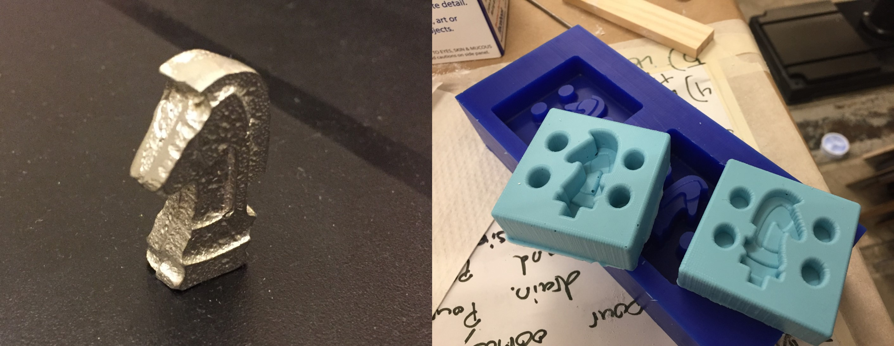
One knight in 2004... (a preface)
This project involved molding and casting. When I was 8 years old, I threw a very memorable birthday party. Kids like me loved playing Xbox so naturally, I decided to go all out on an Xbox themed party. I convinced two of my friends to bring over their Xboxes so we could hook them together and play with all 12 of us in one game. The gaming was memorable and that party instantly made me the coolest kid in our grade (at least among the other 11 attendees). What sticks out in my memory other than the party is the choice of gift that one of my friends made. I held the oddly rectangular package at present time and was impressed by its weight. What birthday present in the world weighs that much?
Turns out my friend had bought me a chess set because, in his words, "that's a type of gaming as well". It was one of those industrial grade chess sets with a nice leather board and pieces that were made of metal. At first I thought it was lame, so it ended up occupying a shelf in my room and collecting dust for years. Around the later part of middle school however, I got that chess set back out because I was a nerd. I began to play nightly games with my dad to try and get better at chess. After about a year, my interest in chess faded as I went to high school and began to focus more on school.
When I went to pack my room away for college, I rediscovered the chess set and lo and behold - a piece had gone missing. I couldn't find one of the white knights no matter how hard I looked through the bottom of my game drawer. It was disappointing - a chess set becomes mostly unusable if a piece is missing. The best I could do was the patchwork solution - "that quarter on the board represents the white knight" but that's confusing for everyone. I was disappointed and left without a clear solution.
Nearly three years later, life has given me the opportunity to rectify the solution. I decided to make a completely custom knight chess piece and cast it out of a bismuth alloy to complete my incomplete chess set. This also represented a unique challenge because the knight is the chess piece with the most complicated features. It was time to make things right with my 8-year-old self.
Modeling the piece in Inventor
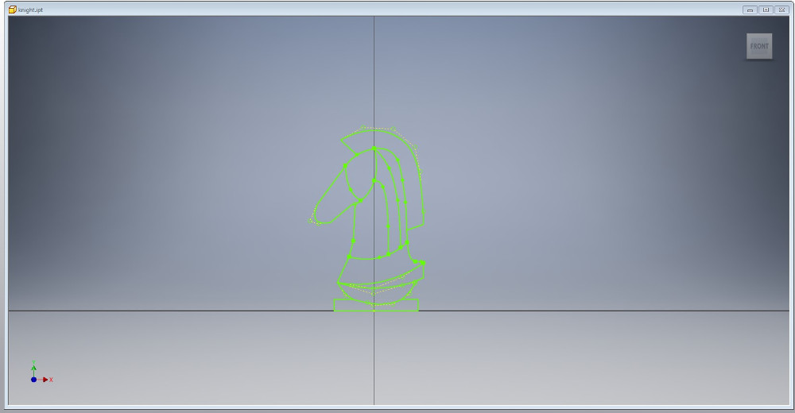I chose to begin making the chess piece in Autodesk Inventor because that is the program I'm the most familiar with it. I've been looking to transition to Fusion 360, but that'll happen next week (as I have said the last several weeks). I looked online for stock images of knight chess pieces to begin to get a sense of what geometry these pieces have. I decided the most straightforward approach to making the piece would be to draw a side profile as a sketch, and then extrude the features to various heights to make the piece. All of the sketch features were drawn as straight lines or splines, so by moving the anchor points, it was easy to pull and stretch the design to look like a knight.
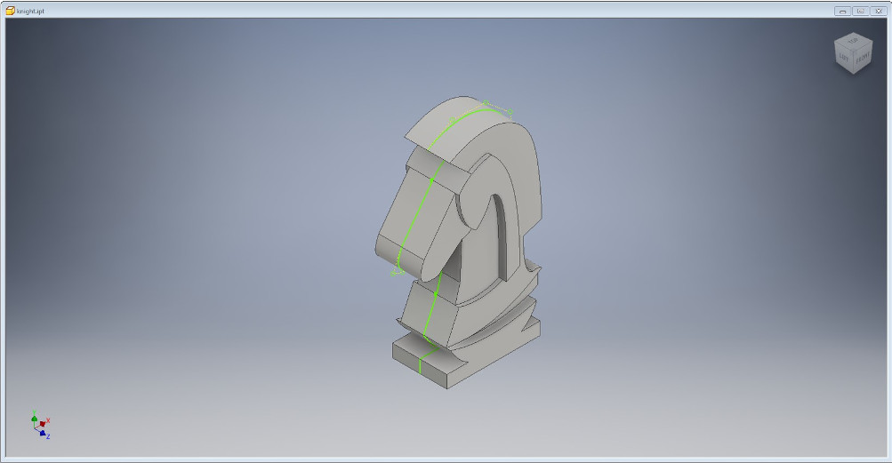I began to extrude the piece to various heights after finishing the sketch. Unfortunately, the sketch had almost no constraints, so it was impossible to scale the piece. I ended up building the piece at the 0.1inch scale and choosing extrude dimensions based off of relative proportions. This was a natural consequence of building a sketch from so many splines - the number of constraints needed to fully constrain the sketch would have been unwieldy.
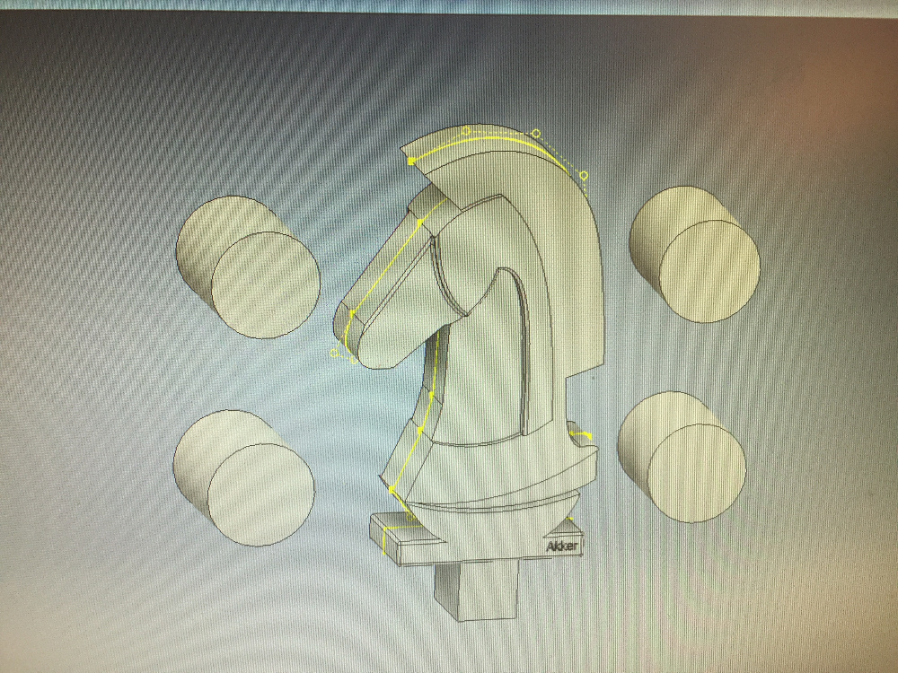The last feature that I needed to add was the pour hole for the metal and a series of pins to help lock the two parts of the mold together. The pour hole was pretty easy - I sketched an extra rectangle at the bottom of the model and extruded it to a width slightly less than the width of the whole piece. Pouring from the bottom made the most sense because any rough patches near the pour hole could just be sanded off to make the bottom of the piece flat anyways. I added some random cylinders along the edge of the design to serve as pins to lock the two sides of the design together - these ended up going unused unfortunately.
In order to be able to mill the mold, I needed to save my inventor file as an STL file. I've had trouble with this before but in this project, I found the simple solution. Inventor does not allow you to save a file as an STL, but you can print a file to STL. The option for turning it into an STL is hidden within the print option as a quick forum post explained to me. I exported the model to STL and with all that, the model was ready to cut.
Milling the positive, Oomoo for the negative
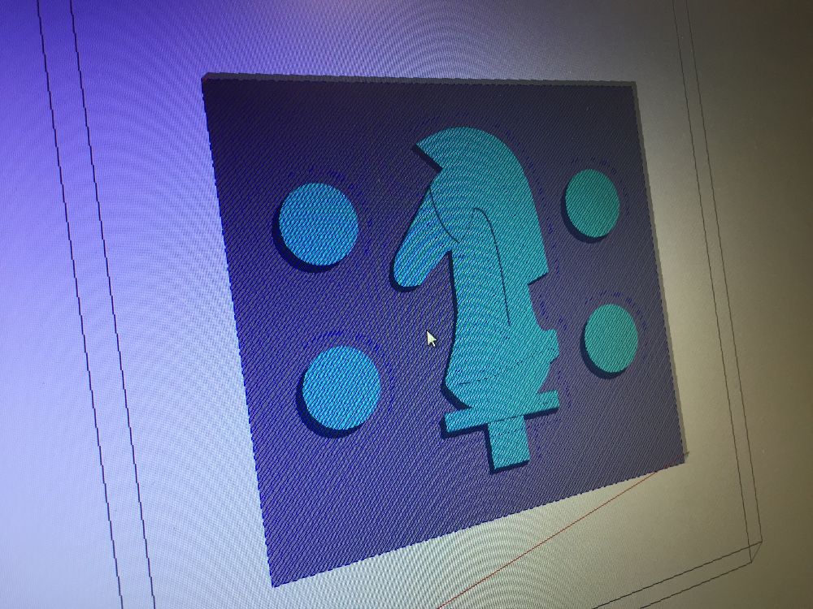
Importing the stl image into the software for milling (the name escapes me right now). Was extremely easy. I was cutting on a 1.5"x3"x7" block where the maximum depth of my cuts was only about .75". I imported the STL file, oriented it so I was only cutting half of the model, then went through a couple aircuts to make sure I would be remaining on the surface of the material with my cuts. I had both a roughing and a finishing cut prepared which ran one after the other.
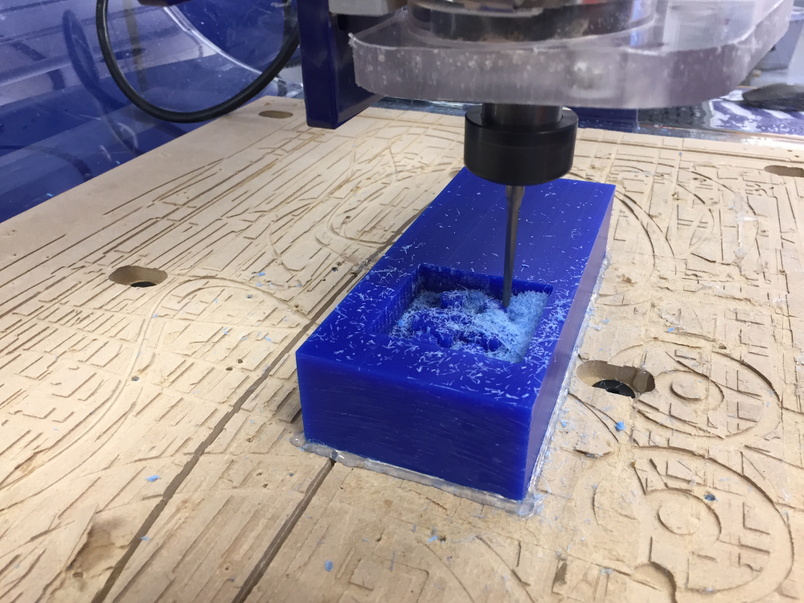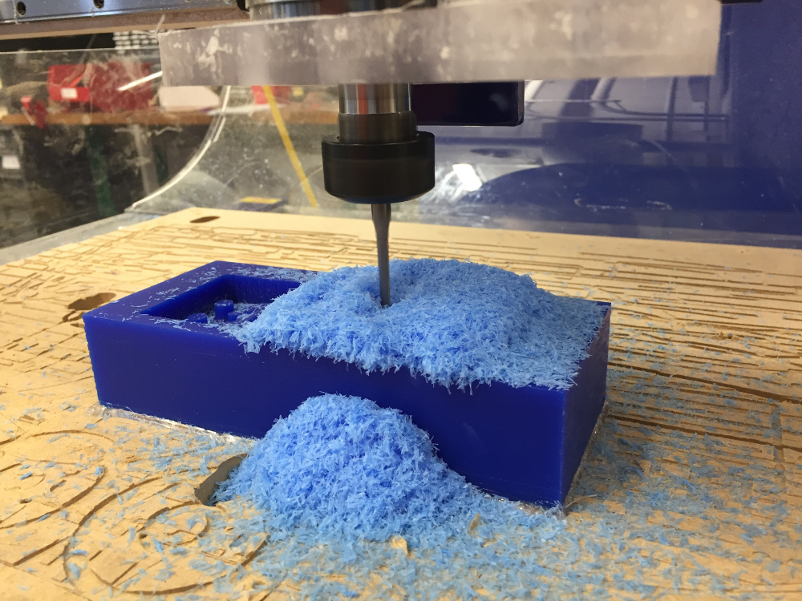
The cut kicked up a ton of blue plastic fluff but it was not a big deal. The speed for my finishing cut was set very high (3cm/s) and I had to turn it down to 1cm/s in order to keep the ShopBot from shaking violently when making diagonal cuts into corners.
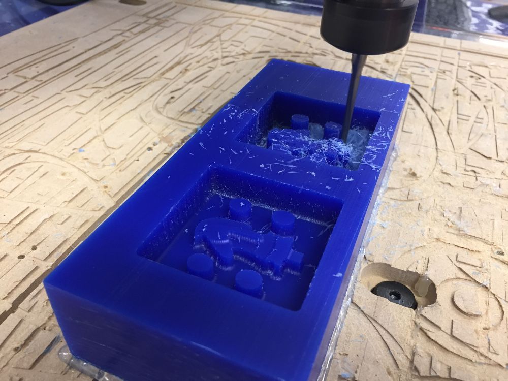Once the cuts were done, it was time to pour the Oomoo. Oomoo is a delightful substance with all the positive qualities of rubber and Elmer's glue mixed into one. I poured very carefully with a small stream to try to avoid air bubbles.
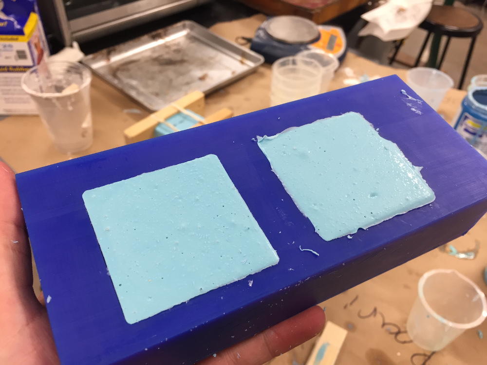Oomoo ordinarily takes about 5 hours to set, but since I was limited on time on Sunday, I managed to speed up the process by leaving it in an oven at 200 degrees Fahrenheight for about 2 hours. The finished mold was difficult to remove, but once I got it out, I had a completed negative that was all ready to pour my molten metal into.
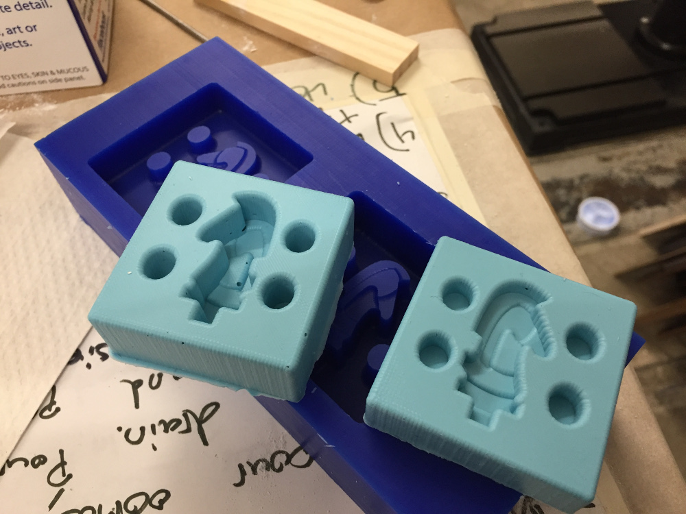Now to briefly explain a rather significant mistake I made. When cutting the inverted side of my STL model, I accidentally messed up the cut depth. Instead of only taking half of the model out of the blue plastic, I cut so deep that the positive image was actually the full depth of my model. As a result, my mold would have produced a piece that was 150% the original width of my piece - a fat knight.

The solution here was straightforward - I found an excellent sharp knife in the lab and cut length-wise on my deep mold. The resultant piece was mostly level but most importantly, was now the proper width. Crisis averted.
Pouring the molten metal and making the knight
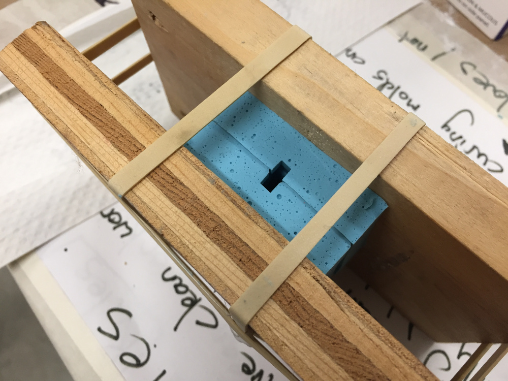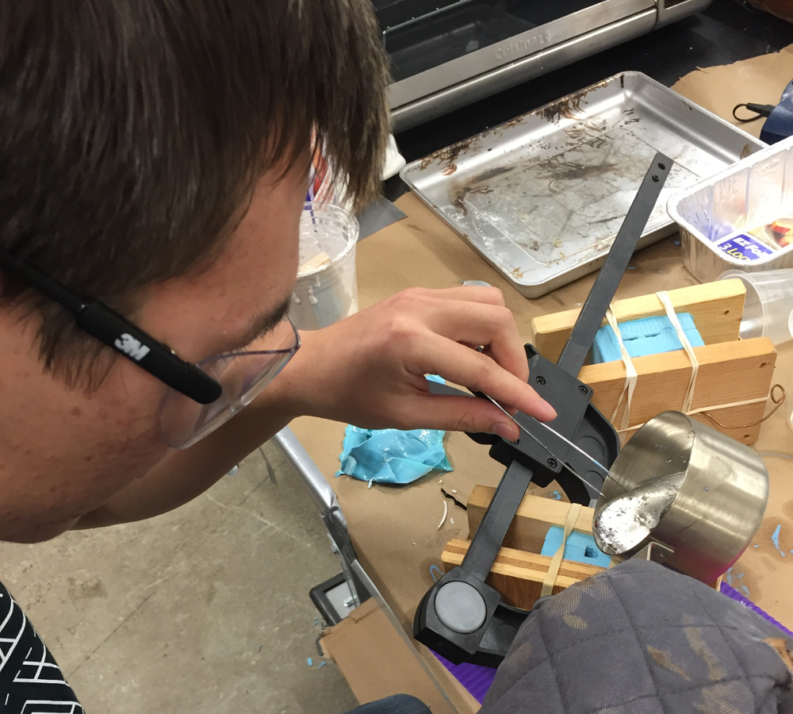
The bismuth alloy took about 30 minutes at 450 degrees Fahrenheight to fully melt. I prepared the mold by clamping it between two pieces of wood and exposing only the pour hole.
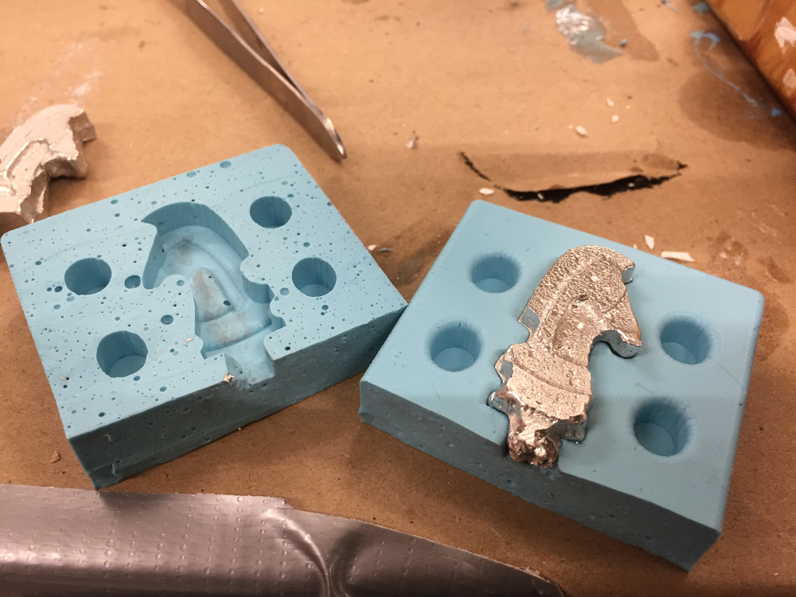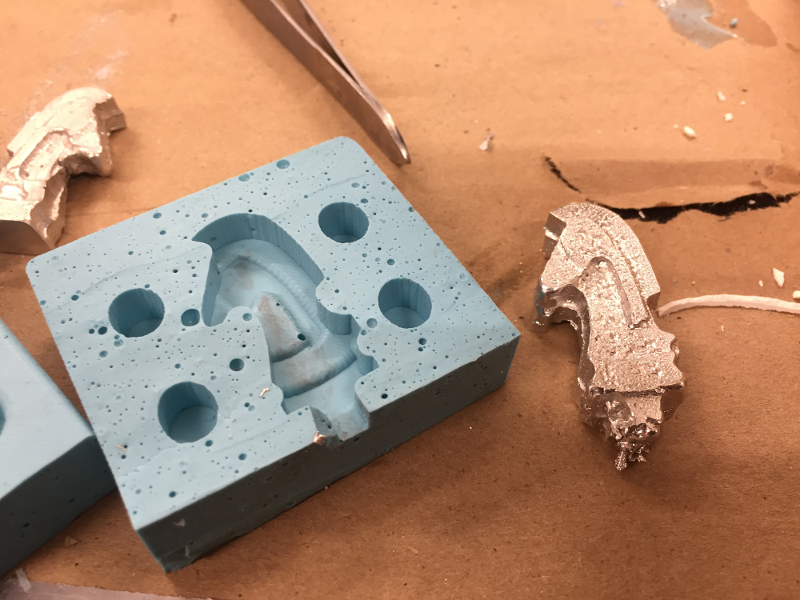
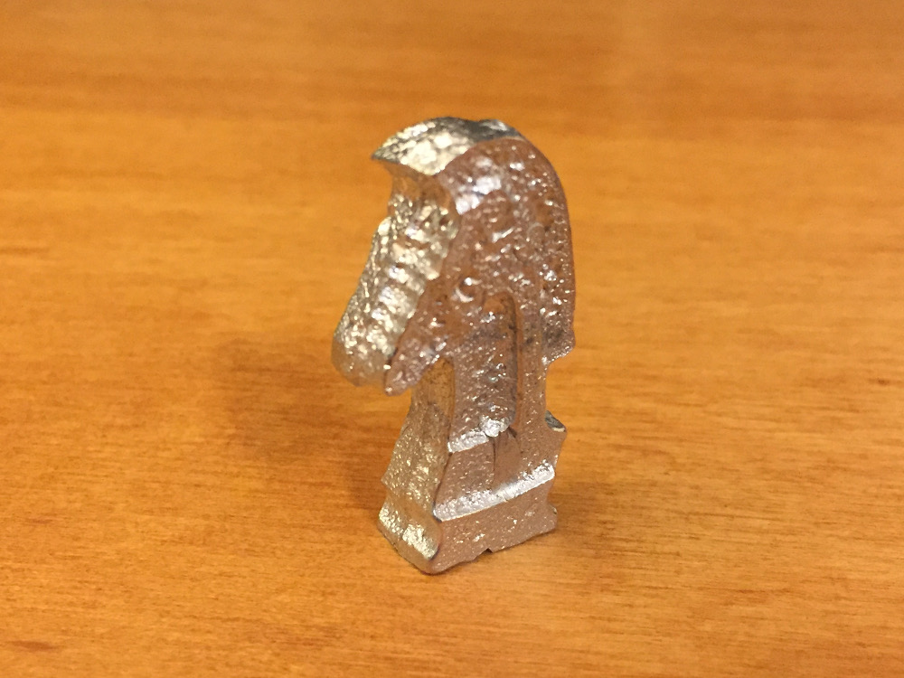
The casted metal part came out excellently! I had to hacksaw off the little knob of metal remaining at the bottom but other than that, it was absolutely perfect. Welcome back, missing knight.